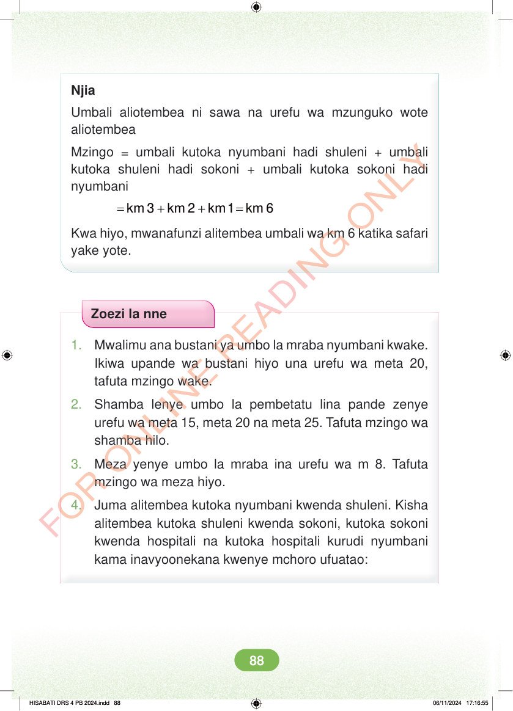

<!DOCTYPE html>
<html lang="sw-TZ"><head><meta charset="utf-8"><meta name="viewport" content="width=device-width,initial-scale=1">
<title>Hisabati: Kitabu cha Mwanafunzi Darasa la Nne</title>
<meta name="title-id" content="pg094_sec001"><meta name="page-section-id" content="98">
<link href="./content/tailwind_output.css" rel="stylesheet"><link href="./assets/libs/fontawesome/css/all.min.css" rel="stylesheet"><link href="./assets/fonts.css" rel="stylesheet">
<style>body{margin:0;background:#eef1ed}main{width:100%;display:flex;justify-content:center;padding:1rem 1rem 5rem;box-sizing:border-box}#content{width:100%;display:flex;justify-content:center}.pdf-page{position:relative;width:min(calc(100vw - 2rem),56rem);aspect-ratio:540.8980102539062/750.6610107421875;background:white;box-shadow:0 4px 24px #0002;overflow:hidden}.pdf-page img{position:absolute;inset:0;width:100%;height:100%;object-fit:fill}</style>
</head><body><main><h1 class="sr-only" id="page-heading">Ukurasa wa 94</h1><div id="content" class="opacity-0"><section role="article" data-section-type="pdf_accessible_page" data-section-id="pg094_sec001" aria-labelledby="page-heading" class="pdf-page"><p class="sr-only" data-id="pg094_gp001_tx001">Njia Umbali aliotembea ni sawa na urefu wa mzunguko wote aliotembea Mzingo = umbali kutoka nyumbani hadi shuleni + umbali kutoka shuleni hadi sokoni + umbali kutoka sokoni hadi nyumbani = + + = km 3 km 2 km 1 km 6 Kwa hiyo, mwanafunzi alitembea umbali wa km 6 katika safari yake yote. Zoezi la nne 1. Mwalimu ana bustani ya umbo la mraba nyumbani kwake. Ikiwa upande wa bustani hiyo una urefu wa meta 20, tafuta mzingo wake. 2. Shamba lenye umbo la pembetatu lina pande zenye urefu wa meta 15, meta 20 na meta 25. Tafuta mzingo wa shamba hilo. 3. Meza yenye umbo la mraba ina urefu wa m 8. Tafuta mzingo wa meza hiyo. 4. Juma alitembea kutoka nyumbani kwenda shuleni. Kisha alitembea kutoka shuleni kwenda sokoni, kutoka sokoni kwenda hospitali na kutoka hospitali kurudi nyumbani kama inavyoonekana kwenye mchoro ufuatao: HISABATI DRS 4 PB 2024.indd 88 HISABATI DRS 4 PB 2024.indd 88 06/11/2024 17:16:55 06/11/2024 17:16:55</p></section></div></main><div class="relative z-50" id="interface-container"></div><div class="relative z-50" id="nav-container"></div><script src="./assets/offline-preloader.js?v=audiofix-20260824-1"></script><script src="./assets/scorm.js"></script><script src="./assets/base.bundle.local.js?v=audiofix-20260824-1"></script></body></html>